A worker-owned mill in Appalachia. We stone-mill organic grains from local farms into fresh whole-grain flours that retain everything commercial milling strips away.
No synthetic pesticides. No GMOs. Certified organic means every grain we source meets the same standard — there's no blended, partially-organic compromise.
Grains from small farms in the Blue Ridge foothills. Buying close to home keeps money in the regional economy and shortens the path from field to mill to bag.
Stone milling runs slow and cool. The outer bran and the nutritious inner layers of each kernel survive intact — the parts industrial roller mills strip away to extend shelf life at the cost of nutrition and flavor. Commercial flour is mostly starch. Ours is the whole grain.
We own and run the mill ourselves. No outside investors, no shareholders — the people doing the work make the decisions and share what we earn.
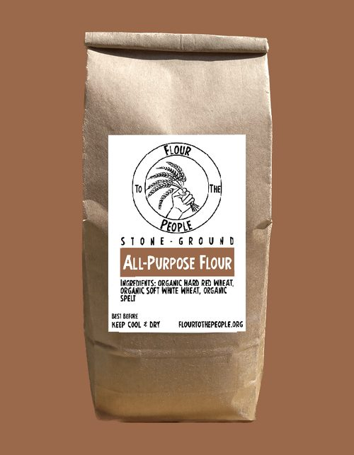
All-Purpose Flour
A combination of hard red, soft white, and spelt wheats for an excellent rise and perfect crumb. Harvested right here in Rocky Mount, VA
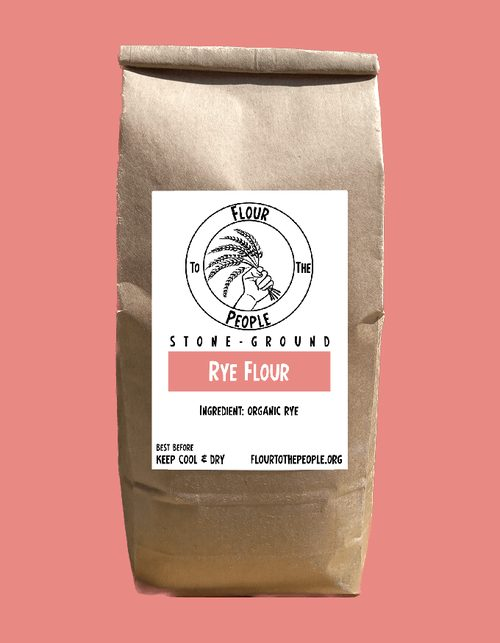
Rye Flour
Rye flour isn't just for rye breads, it's also ideal for sourdough starters, and adds nutrition and flavor to cookies, muffins and even pancakes.
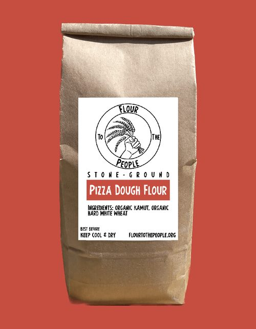
Pizza Dough Flour
Our pizza dough flour is specifically milled and mixed to make you a slightly nutty, deliciously chewy, fan-favorite pizza crust.
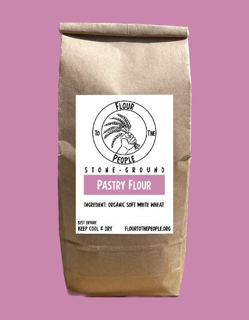
Pastry Flour
A light, soft, smooth white flour perfect for cookies, cakes, croissants, danishes, you name it.
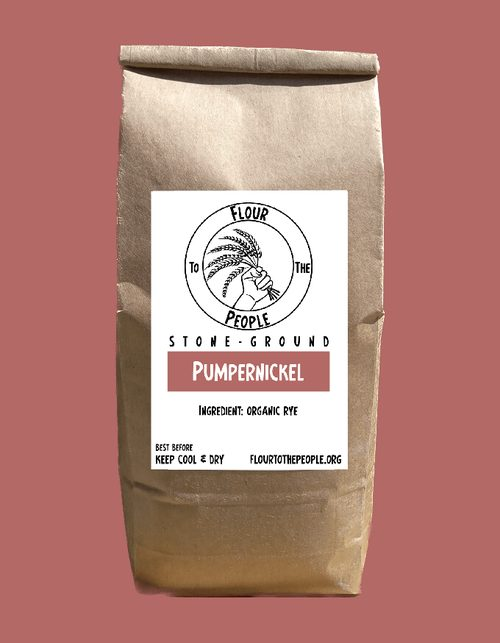
Pumpernickel
An early customer recommendation, pumpernickel has an irreplaceable nuttiness that truly makes an essential component for any rye or sourdough enthusiasts.
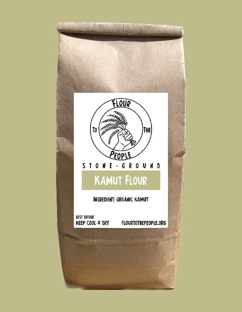
AncientKamut Flour
Perfect for pasta or added to bread flour, Kamut is a nutrient-rich ancient grain & the 4,000 year old ancestor of durum wheat.
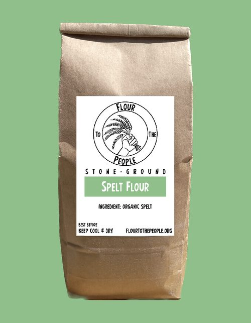
AncientSpelt Flour
This ancient, hearty grain is naturally low in gluten and high in nutrition adding complexity and richness to whatever you bake.
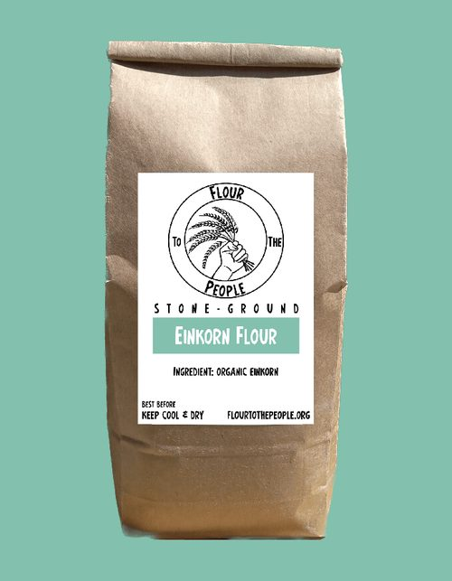
AncientEinkorn Flour
Einkorn (German for 'single grain') easily dates back 10,000 years making it one of the oldest cultivated grains in the world.
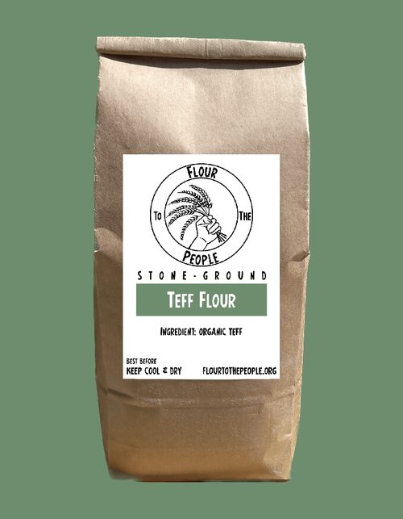
AncientGFTeff Flour
This nutty, naturally gluten-free, ancient grain is a staple in Ethiopia — remarkably rich in protein, dietary fiber, calcium, iron, and the list goes on...
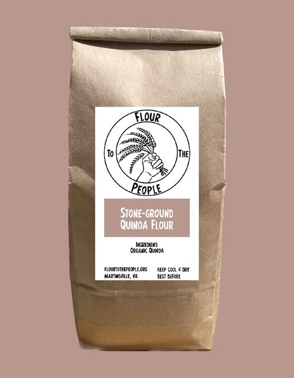
AncientGFQuinoa Flour
Along with teff, einkorn and Kamut, quinoa makes one of the most nutritious flours on the planet. Naturally gluten-free, extremely protein and mineral rich.
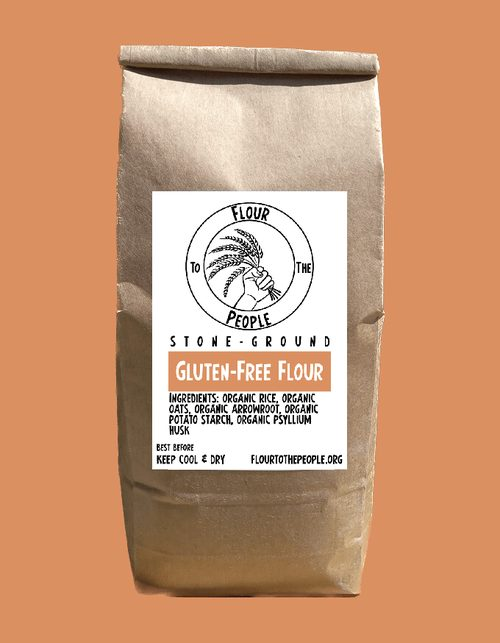
GFGluten-Free Flour
Our gluten-free flour blend of oats and brown rice is milled to perform just as well as traditional flour - without the gluten.
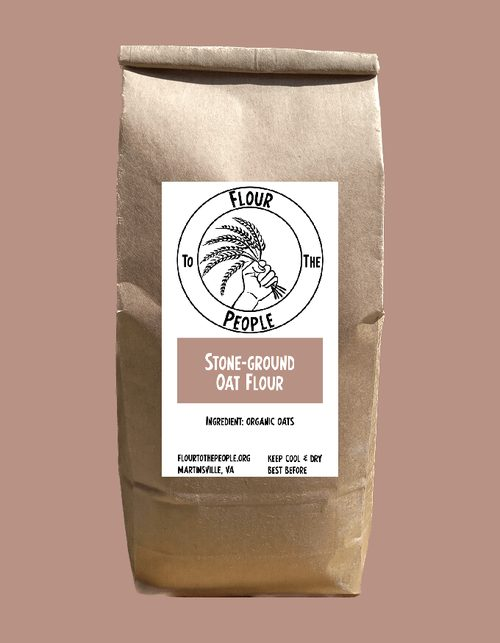
GFOat Flour
Don't take oat flour for granted. It's naturally gluten-free and overloaded with nutrition from fiber to protein, from calcium to zinc. It's a must-have addition for kitchen, and the gluten-free baker above all.
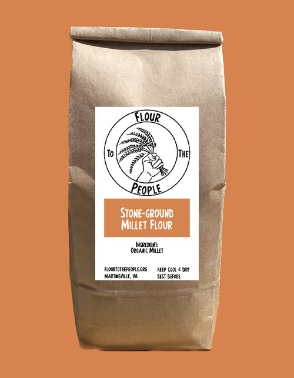
GFMillet Flour
Millet flour is ancient, nutrious, versatile, naturally gluten-free, and delicious - and it's alkaline! It's a fantastic addition to whatever you bake - and it's alkaline! I just can't get over that.
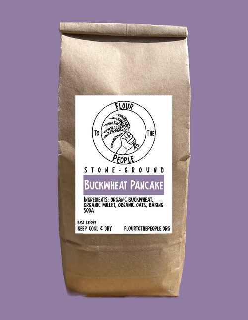
GFBuckwheat Pancake Mix
Our combination of naturally gluten-free buckwheat, oat and millet flours make pancakes that are rich in flavor and nutrition.
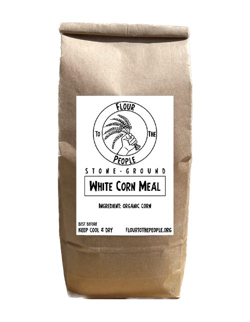
Corn Meal
A kitchen essential, accept no substitute for freshly milled organic corn flour.
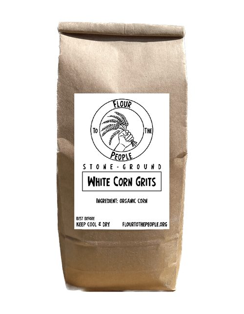
Corn Grits
Stone-ground for that traditional coraseness and flavor.
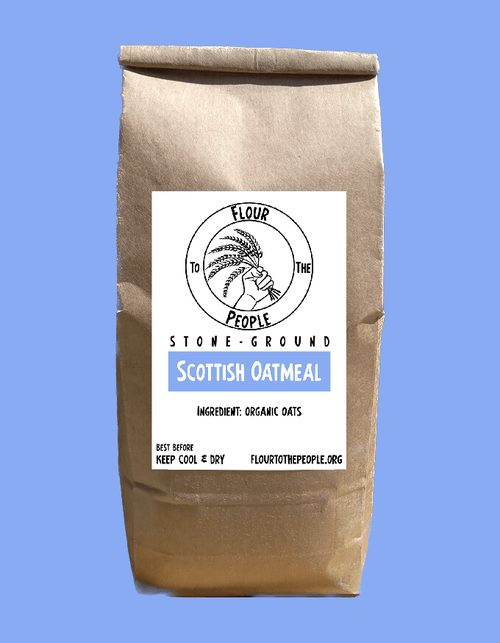
Scottish Oatmeal
Our 'Scottish' oatmeal was inspired by a customer after returning from Scotland with the hope of finding the same coarsely ground, nutty oatmeal she enjoyed abroad here at home - and we were happy to oblige.
Markets & Farm Stores
| Location | Hours |
|---|---|
Riverstone Farm Store 708 Thompson Road, Floyd, VA 24091 | Every day · 9am–7pm |
Floyd Farmer's Market Floyd, VA | Sat 9am–1pm yr-round Thu 2–6pm May–Oct |
Floyd EcoVillage Farm Store 188 Eco Village Trail | Open during daylight |
Fairy Stone State Park Stuart, VA | Mon 5–7pm · May–Sep |
Roanoke Co+op 1319 Grandin Rd SW | Daily 7am–9pm |
Recipes
Tested using our stone-milled flours. Each one is designed to show what whole-grain flour can do when it's this fresh.
This versatile, rich dough is terrific in pizza, focaccia, and flatbread.
Ingredients
- 2 3/4 cups lukewarm water
- 1 tbsp granulated yeast
- 1 tbsp salt
- 1 tbsp sugar
- 1/4 cup olive oil
- 6 1/2 cups pizza dough flour
Directions
- In a large mixing bowl, mix the yeast, salt, sugar, and olive oil with the water.
- Mix in the flour with a stand mixer fitted with the dough mixed attachment (or knead by hand) for several minutes until soft and pliable.
- Cover (not airtight) for approximately two hours and let rise at room temperature until the dough rises and collapses (flattens on top).
- Dough can be used immediately after the intitial rise or refrigerated for up to two weeks.
Ingredients
- 2 cups lukewarm water
- 2 tsp granulated yeast
- 2 tsp salt
- 4 cups pizza dough flour
- olive oil for drizzling
- rosemary for sprinkling
- coarse sea salt for sprinking
Directions
- Mix yeast and salt with lukewarm water in a large mixing bowl.
- Mix in the flour with a stand mixer (dough mixer attachment) or by hand and knead until soft and pliable.
- Cover (not airtight) and allow to rest at room temperature until the dough rises and collapses (flattens on top), approximately 2 hours.
- Grease a baking sheet lined with parchment paper or silicone mat with olive oil. Set aside. Using wet hands, gently remove the dough from the bowl and quickly shape into a ball by stretching the surface of the dough around to the bottom on all four sides, rotating the ball a quarter-turn as you go.
- Flatten and stretch the dough to fit the baking sheet, using wet hands. Allow to rest and rise for 20 minutes.
- Preheat the oven to 425 degrees with an empty broiler tray on the bottom shelf.
- Before placing in the oven, dimple focaccia all over with your fingers, creating deep depressions in the dough. Drizzle with olive oil and sprinkle with rosemary, and salt.
- Place the baking sheet on the center rack of the oven. Pour 1 cup of hot water into the broiler tray and quickly close the oven door. Bake for about 20 minutes, or until the crust is medium brown. Let cool slightly and enjoy!
Ingredients
- 3 cups of lukewarm water
- 1 tbsp granulated yeast
- 1 tbsp salt
- 6 1/2 cups all purpose flour (or any combination of our flours--einkorn, spelt, rye, and kamut are delicious additions-- with at least 50% all purpose)
Directions
- In a large mixing bowl, combine the water, yeast, and salt.
- Add in the flour all at once and stir to combine. Using a stand mixer fitted with the dough mixer attachment, knead the dough for several minutes until soft and pliable. Alternatively, use your hands to mix or a danish dough whisk.
- Cover the bowl (not airtight) and allow to rest and rise at room temperature for 2 hours (may be longer depending on room temperature) until the dough rises and flattens on top.
- Using wet hands, gently remove half of the dough from the bowl and quickly shape into a ball or oval by stretching the surface of the dough around to the bottom on all four sides, rotating the ball a quarter-turn as you go. If you want to do two loaves, repeat with other half of the dough. Otherwise refrigerate the dough until you are ready to use, up to 2 weeks.
- Let the dough rise on parchment paper on a pizza peel for 60-90 minutes.
- Preheat the oven to 450 degrees with a baking stone on the center rack, with a metal broiler tray on the bottom rack.
- Cut the dough with 1/4 inch deep slashes using a wet serrated bread knife.
- Slide the loaf into the oven onto the preheated stone and add a cup of hot water into the broiler tray. Bake the bread for 35-45 minutes or until a deep brown color. You can remove the parchment paper after 20-25 minutes to crisp up the bottom crust.
- Allow the loaf to cool on a rack until it is room temperature before slicing. Enjoy!
Ingredients — Cookies
- 3 cups pastry flour
- 2 tsp ground ginger
- 2 tsp ground cinnamon
- 3/4 tsp salt
- 1/2 tsp ground cloves
- 1/2 tsp finely ground black pepper
- 1/2 tsp baking soda
- 1/4 tsp baking powder
- 1/2 cup melted coconut oil
- 1/2 unsulphured molasses
- 1/2 sugar
- 1 egg
Royal Icing
- 1 egg white
- 1 cup sugar
Directions
- In a large mixing bowl, combine flour, ginger, cinnamon, salt, cloves, pepper, baking soda, and baking powder. Whisk until blended.
- In a small mixing bowl, combine the coconut oil and molasses and whisk until combined. Add the sugar and whisk until blended. Add the egg and whisk until the mixture is thoroughly blended.
- Pour the liquid mixture into the dry and mix until combined. Divide the dough in half. Shape each half into a round disk about 1 inch thick and wrap in plastic wrap. Place both discs in the refrigerator and chill until cold-- about 1 hour, or up to overnight.
- Preheat the oven to 350 degrees with racks in the middle and upper third of the oven. Line two large baking sheets with parchment paper. Lightly flour your working surface and roll out one of your discs until its 1/4 inch thick.
- Use cookie cutters to cut out shapes and place on the prepared baking sheet, leaving about 1/2 inch of space around each one. Combine your dough scraps into a ball and roll them out again, repeating until you have used up all of your dough. Repeat with the remaining disc.
- Place baking sheets in the oven, one on the middle rack and one on the upper. Bake for 8-11 minutes. Place the baking sheets on cooling racks to cool. The cookies will crisp further as they cool.
- Wait until the cookies are fully cooled before decorating. To make the icing, whisk the egg white with a mixer until frothy and slowly add the sugar until thick and glossy. Transfer to a small resealable plastic bag and empty excess air to seal the bag. Cut off a tiny piece of one of the bottom corners and squeeze the icing through the hole to decorate. Let icing harden about 20 minutes before stacking in a storage container. Cookies will keep up to a week at room temperature, if they last that long!
Makes about four 1-pound loaves. With this method, you save time by mixing a large batch and storing it in the refrigerator, pulling off dough to use as you need it. The nice thing about the long fermentation is the dough develops a sourdough flavor.
From Gluten-Free Artisan Bread in Five Minutes a Day — https://artisanbreadinfive.com/buying-our-books/
Ingredients
- 6 1/2 cups (2 pounds 3 ounces / 990 grams)
- 1 tablespoon Active Dry or Quick Rise yeast
- 1 to 1 1/2 tablespoons salt
- 2 tablespoons sugar or honey (optional)
- 3 3/4 cups water
To mix the dough
I suggest using a Stand Mixer with the paddle attachment for the smoothest dough and ease of mixing. You can still do the mixing in a bucket or bowl, but it will take a bit more effort to get a really smooth dough.
In a stand mixer, fitted with the paddle attachment, add the yeast to the flour mix. Add the salt and the sugar (if using) to the flour mix. You can add more or less salt, depending on your preference. Blend all the dry ingredients for a few seconds.
While the mixer is on low speed, slowly add all the liquid. Once all of the liquid is added to the mixer, turn it up to medium-high speed and let it blend for about 1 minute. The dough will look and feel like soft biscuit dough.
Transfer the dough to a 4+ quart Food-Storage Container. The dough will rise some, but don’t expect it to double in size. Cover the container, but it shouldn’t be airtight. You may want to poke a very small hole in the lid to allow the gas from the yeast to escape. Allow the dough to sit at room temperature for 2 hours. If your kitchen is cool, it may take 2 1/2 to 3 hours. You can use the dough after the initial rise or refrigerate the dough for about 10 days
When you are ready to bake, sprinkle some GF flour on a piece of parchment. Dust the surface of the dough with more flour. Scoop up a 1-pound piece of dough. Unlike wheat dough, this will not have any stretch when you lift it out, it will just break off. Place the dough on the parchment and shape it into a ball. It may not be smooth at this point. Using wet fingers, smooth out the surface of the dough. Creating a smooth surface also seems to help trap the gas from the yeast and improve the rise of the bread. Cover loosely with plastic and allow to rise for about an hour. If you are using fresh dough, then just 30 minutes.
Preheat oven with a Baking Stone to 450°F. It is very important that your oven be hot enough, so use an oven thermometer to check the actual temperature. If you are using a thick Baking Stone, this can take 45 minutes or longer. Put a broiler tray on the bottom of the oven, which will be used to catch water to create steam in your oven.
Once the dough is ready (it may not rise much while resting), dust it with more flour and slash the top with a serrated knife. Slide the loaf onto the preheated baking stone, add 1 cup water to broiler tray to create steam and quickly close the door. Bake the loaf for about 45 minutes or until nicely browned.
Allow the loaf to cool to room temperature before cutting into it. The gluten-free artisan bread will be quite gummy if you cut into it before it is totally cooled. Using a sharp serrated bread knife is the best for cutting this loaf.
If you don’t finish the loaf in one or two days, wrap it well and freeze it for another time. This gluten-free artisan bread also makes wonderful toast the next morning, and you can use up the remaining dough over the next 10 days. All your subsequent loaves are made from pre-mixed, stored dough that will develop sourdough flavors as it ages.
Frequently Asked Questions
FlourtothePeople@protonmail.com · (276) 340-0288
About Our Flour
Industrial roller milling separates the grain into bran, germ, and endosperm — removes the bran and germ, and mills only the starchy endosperm into white flour. Stone milling grinds the whole grain together in a single pass. The bran, germ, and endosperm are never separated. More fiber, more minerals, more B vitamins, and significantly more flavor.
Yes. Every grain we source and mill is certified organic. We don't blend organic and conventional grain, and we don't handle any non-organic product in our facility.
For most recipes, yes — but whole-grain flours absorb liquid differently than refined white flour. You'll likely need slightly more liquid (10–15% more). Our pastry flour is closest to commercial all-purpose in performance and can substitute 1:1 in most baking.
Add items to your cart, fill out the checkout form, and submit — this sends us your order by email. We'll confirm within 24 hours and follow up to arrange payment via Venmo, PayPal, or card at market pickup.
Yes — we ship within the continental United States. Shipping is $7.99 on orders under $35; orders over $35 ship free.
Room temperature in a sealed container: 1–3 months. Refrigerator: 6 months. Freezer: up to 1 year. Whole-grain flour contains the germ's natural oils that can go rancid. Rancid flour smells like paint or pencil shavings.
Everyone at the mill has an equal vote on major decisions — pricing, sourcing, expansion, how to use the year's earnings. There are no outside owners. The people who do the work make the calls together.
Contact Us
Questions about an order, a product, or the mill — we read and respond to everything.
Find Us
Floyd, VA 24091
Thu 2–6pm (May–Oct)
Send a Message
Your Cart
Complete Your Order
We'll confirm within 24 hours.
Check your email client for the order details.